20 tons · Inner Sphere · 24 variants · 2499 to 3128

Here is the line from the old technical readouts that tells you everything. Few MechWarriors enjoyed piloting Locusts. Not that they were bad. That nobody wanted to be in one.
And yet Bergan Industries has been building them since 2499 without a break, out of eight factories during the Star League and close to a dozen during the Succession Wars, Periphery plants included. The parts are everywhere and they are cheap. Pirates field Locusts. Corporate security fields Locusts. The Great Houses eventually stopped caring about the design entirely and the Periphery just kept building them anyway.
That is the whole machine in one sentence. Nobody wants it and everybody has it, and the reason is economics rather than tactics. A 1V is BV 432. An Atlas is 1897. You can put 4.4 Locusts on the table for one Atlas and still have change.
What you have got. One Martell medium laser in a chin turret. Two Sperry Browning machine guns, one either side, sharing a single two hundred round magazine. Four tons of plate and an LTV 160 that pushes it to about 130 kilometres an hour. That is the entire specification and there is nothing hidden in it.
What it costs you. It has no hands. None of them do. So anything that closes to punching range is doing something to you that you cannot do back. The official quirk list says compact, narrow profile, cramped cockpit, minimal arms and weak legs, and the last two are not flavour text. Four tons of armour means a direct hit from something serious ends the conversation.
If you are choosing one: the LCT-1V is still correct and always was. The LCT-3M adds an anti-missile system, which matters more than another gun on something this fragile. The LCT-5M is where it stops feeling slow. And the LCT-7V is the one where somebody actually picked the engine to keep the pilot alive.
Twenty tons does not buy you very much, so the question is what you spend it on, and Bergan answered that in 2499 by spending almost all of it on the engine. The LTV 160 gets a cruising speed of about 86 kilometres an hour and a top end near 130, and at the time that was enough to outrun most things it would meet.
Everything else is what was left over. A single Martell medium laser, mounted in a chin turret so it can actually point at things without the whole machine turning. Two Sperry Brownings on the flanks, sharing one two hundred round magazine between them, and they are there for exactly one reason: infantry go for the legs on something this size, and machine guns discourage that.
Then four tons of StarSlab and that is the budget gone.
The thing that catches people out is the hands, or rather the absence of them. A Locust has no hand actuators. It is on the quirk list as minimal arms and it means that in a physical fight you have nothing. Something walks into you and punches, and all you can do is be somewhere else next turn. Which, to be fair, is the plan.
The old readouts are blunt about the job: when a Locust ends up in a fight, it is usually fighting a holding action until something heavier turns up. That is not a criticism, that is the design brief.
The other use is the one people forget. Three Locusts working together can swarm a single machine that has got separated from its support. Individually they are a nuisance. In threes they are a real problem, and at BV 432 apiece you can afford three of them for less than one proper heavy.
What you should not do is fight fair with one. 15 of the 24 variants run at the classic 8/12, and that speed is the entire defensive system. Standing still in a Locust is the same as being dead in a Locust, just with extra steps.
The economics are the history here. Bergan ran Locusts out of eight factories through the Star League era and supplied the League and its member states right up to the Amaris Civil War. During the Succession Wars the number of plants went up rather than down, to nearly a dozen, Periphery ones included.
That did something unusual. Because so many places built them, the price stayed low and the parts stayed available, and the result is that everybody ended up with Locusts. Pirates could afford them. Corporate defence forces bought them in numbers. Periphery plants were largely limited to the original 1V, so that is what they built, over and over, for centuries.
When the Successor States started rebuilding old designs with recovered technology, the Locust got its share. The Capellans converted the Ares facility to build the 1L with a triple-strength myomer that, and this is the detail I enjoy, would not catch fire. Which tells you something about the versions that came before it.
The Word of Blake wanted their own, and went to Corean Enterprises to have it built. Corean had misgivings, so Blake agreed to buy the entire first production run up front to settle them. That is how the 5M happened, and every Level III unit ended up with at least one.
And then the part that should be sad and somehow is not. None of the Great Houses were much interested in keeping the line going. The Periphery, which had always relied on it, carried on building and upgrading Locusts on its own, and they are still turning them out into the thirty-second century. One of the most common machines ever built, kept alive by the people everyone else looks down on.
Every verdict below is against other Locusts available in the same era, not against the rest of the game. On twenty tons the margins are small and the choices are stark, which makes the ranking more useful here than on a heavy.
Nothing in its era does the chassis's job better for the money.
Does the job competently. Another variant does it better or cheaper, but there is no reason to avoid this one.
Only earns its Battle Value if you specifically need what it carries. C3, stealth, a command console, flak, jump jets.
Another variant in the same era, at no more than 3 percent above its Battle Value, matches or beats it on every Alpha Strike damage band, on armour, on structure, and carries every special ability it has. Nothing gained, something lost, no dearer.
Only the Trap tier is calculated. It is worked out from the variant data rather than decided by me, which means it is falsifiable: to argue with it you only have to name something the cheaper machine gives up. The other three are my opinion and you should treat them that way. 2 of the 24 Locust variants fail the Trap test. The full rating scale is here, including what it deliberately does not measure.
All 24 are in the table further down. These are the ones that change how the machine plays.
20 tons · BV 432 · PV 18 · Scout · 2499
Walk 8 / Run 12 / Jump 0 · 10 Single · 160 Fusion Engine
2x Machine Gun, 1x Medium Laser
The original from 2499, and still the one you will meet most often six centuries later. One Martell medium laser in a chin turret, two Sperry Browning machine guns sharing a two hundred round magazine, four tons of plate and an engine that does the rest. At BV 432 it is the cheapest useful thing you can put on a table.
20 tons · BV 440 · PV 18 · Scout · 2567
Walk 8 / Run 12 / Jump 0 · 10 Single · 160 Fusion Engine
2x SRM 2, 1x Medium Laser
Lyran, 2567, and they swapped the machine guns for a pair of SRM 2 racks. It cost them a ton of armour on a machine that did not have a ton of armour spare. Somebody in the Commonwealth wanted a light mech with a punch and this is what happened. Beaten outright by the LCT-1V, which costs 8 less BV and gives up nothing it carries.
20 tons · BV 642 · PV 23 · Striker · 2610
Walk 8 / Run 12 / Jump 0 · 10 IS Double · 160 XL Engine
2x Medium Pulse Laser, 2x Small Pulse Laser, 1x Medium Laser
The SLDF Royal. XL engine, endo steel, ferro-fibrous, double heat sinks and pulse lasers in both arms. Everything the original could not have, all at once. If your era allows it there is nothing here to argue about.
20 tons · BV 522 · PV 20 · Scout · 3050
Walk 8 / Run 12 / Jump 0 · 10 Single · 160 Fusion Engine
4x Small Laser, 1x Anti-Missile System, 1x Medium Laser
Free Worlds League, 3050. Keeps the Martell, swaps the machine guns for four small lasers, and adds an anti-missile system, which on a machine this fragile is worth more than another gun. Endo steel and ferro-fibrous underneath.
20 tons · BV 719 · PV 26 · Striker · 3066
Walk 12 / Run 18 / Jump 0 · 10 Single · 240 XL Engine
4x ER Small Laser, 1x ER Medium Laser
Word of Blake, ER lasers throughout and a Hermes 240 XL that takes it to 194 kilometres an hour. Every Level III unit had at least one. This is the Locust that finally stops feeling slow.
20 tons · BV 956 · PV 31 · Striker · 3071
Walk 14 / Run 21 / Jump 0 · 10 IS Double · 280 XL Engine
2x ER Medium Laser, 1x ER Small Laser
A Hermes 280 XL in a twenty ton chassis. Two hundred and twenty-six kilometres an hour, and over three hundred with the MASC lit. They fitted a small cockpit to save the weight, which makes it harder to pilot, and you are still made of four tons of plate. Beaten outright by the LCT-5V, which costs 291 less BV and gives up nothing it carries.
20 tons · BV 585 · PV 25 · Scout · 3102
Walk 10 / Run 15 / Jump 0 · 10 IS Double · 200 Light Engine
2x Magshot, 1x Medium X-Pulse Laser
A light engine instead of an XL, which on a chassis this fragile is the right call, plus heavy ferro-fibrous and a Magshot Gauss rifle in each arm. The light engine was chosen specifically to improve survivability, which is not a sentence you get to write about many Locusts.
20 tons · BV 436 · PV 16 · Missile Boat · 3049
Walk 8 / Run 12 / Jump 0 · 10 Single · 160 Fusion Engine
2x LRM 5
Two LRM 5s and nothing else. No close-range weapons at all, ferro-fibrous plate and an endo steel frame. It harasses from distance and runs, and if anything gets near it you have no answer whatsoever.
Piloting one. Speed is your armour. Every turn you spend not moving at full pace is a turn you are just a small target with thin plate. Get behind things. Rear armour is where a medium laser actually matters, and you are one of the few machines that can reliably get there. Do not trade shots with anything. You will lose, and it will not be close.
Fighting one. Do not chase it, because you will not catch it and you will disorder your own line trying. Make it come to you, or ignore it and accept that it is spotting for somebody. If it does get close, punch it. It has no hands and it has weak legs on the quirk list, and physical attacks are how Locusts actually die.
What I see go wrong. People play them like small heavies and try to contribute damage. That is not the job. The job is information, rear arcs, and being somewhere inconvenient. And people forget three of them together are a completely different proposition to one on its own.
If you run solo games with our AI opponent, the Locust is the clearest example on the site of role tags mattering more than the chassis name. 14 of the 24 variants are tagged Scout and 7 are Strikers, and the engine drives those very differently.
Worth knowing because an enemy lance with three Scout Locusts plays nothing like one with three Strikers, and the two groups overlap heavily on Battle Value.
Damage figures are the Alpha Strike short, medium and long values. BV is Battle Value 2.0.
| Variant | Intro | BV | PV | Role | Weapons | S/M/L | Verdict |
|---|---|---|---|---|---|---|---|
| Age of War | |||||||
| LCT-1V | 2499 | 432 | 18 | Scout | 2x Machine Gun, 1x Medium Laser | 1/1/0 | Worth it |
| LCT-1S | 2567 | 440 | 18 | Scout | 2x SRM 2, 1x Medium Laser | 1/1/0 | Trapbeaten by LCT-1V |
| Star League | |||||||
| LCT-1M | 2571 | 424 | 21 | Missile Boat | 2x LRM 5, 1x Medium Laser | 1/2/1 | Situational |
| LCT-1Vb | 2610 | 642 | 23 | Striker | 2x Medium Pulse Laser, 2x Small Pulse Laser, 1x Medium Laser | 3/2/0 | Worth it |
| Early Succession War | |||||||
| LCT-1E | 2811 | 553 | 19 | Scout | 2x Medium Laser, 2x Small Laser | 2/1/0 | Solid |
| C | 2832 | 672 | 23 | Striker | 2x ER Small Laser, 1x Medium Pulse Laser | 2/2/0 | Situational |
| Late Succession War - LosTech | |||||||
| LCT-3V | 3004 | 490 | 19 | Scout | 2x Machine Gun, 2x Medium Laser | 2/1/0 | Solid |
| Late Succession War - Renaissance | |||||||
| LCT-1L | 3030 | 474 | 19 | Scout | 2x Machine Gun, 1x Medium Laser | 1/1/0 | Situational |
| Clan Invasion | |||||||
| LCT-3D | 3049 | 436 | 16 | Missile Boat | 2x LRM 5 | 0/1/1 | Situational |
| LCT-3S | 3049 | 483 | 20 | Striker | 2x Streak SRM 2, 1x Medium Laser | 2/2/0 | Solid |
| LCT-3M | 3050 | 522 | 20 | Scout | 4x Small Laser, 1x Anti-Missile System, 1x Medium Laser | 2/1/0 | Worth it |
| Civil War | |||||||
| LCT-1V2 | 3065 | 568 | 19 | Scout | 4x Rocket Launcher 10, 1x Medium Laser | 1/1/0 | Situational |
| LCT-5M | 3066 | 719 | 26 | Striker | 4x ER Small Laser, 1x ER Medium Laser | 2/2/0 | Worth it |
| Jihad | |||||||
| LCT-5V | 3068 | 665 | 24 | Striker | 2x Rocket Launcher 10, 2x ER Medium Laser | 2/2/0 | Worth it |
| LCT-5T | 3070 | 520 | 22 | Scout | 6x Light Machine Gun, 2x Light Machine Gun Array, 1x ER Medium Laser | 2/2/0 | Situational |
| LCT-6M | 3071 | 956 | 31 | Striker | 2x ER Medium Laser, 1x ER Small Laser | 2/2/0 | Trapbeaten by LCT-5V |
| LCT-5S | 3073 | 509 | 21 | Striker | 2x MML 3, 1x ER Medium Laser | 2/2/0 | Solid |
| LCT-5W | 3076 | 695 | 23 | Scout | 2x ER Medium Laser, 1x TAG | 1/1/0 | Solid |
| LCT-5W2 | 3079 | 787 | 24 | Scout | 2x ER Medium Laser, 1x TAG | 1/1/0 | Worth it |
| Early Republic | |||||||
| LCT-5M2 | 3087 | 693 | 25 | Scout | 2x Medium Pulse Laser, 1x ER Medium Laser | 2/2/0 | Solid |
| LCT-5M3 | 3088 | 929 | 23 | Scout | 2x ER Medium Laser, 1x ER Large Laser | 2/2/1 | Situational |
| Late Republic | |||||||
| LCT-7V | 3102 | 585 | 25 | Scout | 2x Magshot, 1x Medium X-Pulse Laser | 2/2/0 | Worth it |
| LCT-7V2 | 3112 | 634 | 25 | Sniper | 2x ER Small Laser, 1x Light PPC | 1/2/1 | Solid |
| LCT-7S | 3128 | 706 | 21 | Scout | 2x Machine Gun, 1x ER Medium Laser | 2/1/0 | Solid |
Availability for the LCT-1V by era, straight off the Master Unit List. It appears in all 11 of them, which almost nothing does.
| Era | Available to |
|---|---|
| Star League (2571 - 2780) | Capellan Confederation, Draconis Combine, Federated Suns, Free Worlds League, Mercenary, Periphery General, Star League General |
| Early Succession War (2781 - 2900) | Inner Sphere General, Mercenary, Periphery General, Star League in Exile |
| Late Succession War - LosTech (2901 - 3019) | ComStar, Inner Sphere General, Kell Hounds, Mercenary, Periphery General, Wolf's Dragoons |
| Late Succession War - Renaissance (3020 - 3049) | ComStar, Inner Sphere General, Kell Hounds, Mercenary, Periphery General, Wolf's Dragoons |
| Clan Invasion (3050 - 3061) | Inner Sphere General, Kell Hounds, Mercenary, Periphery General, Wolf's Dragoons |
| Civil War (3062 - 3067) | Inner Sphere General, Kell Hounds, Mercenary, Periphery General, Wolf's Dragoons |
| Jihad (3068 - 3080) | Escorpión Imperio, Inner Sphere General, Kell Hounds, Mercenary, Periphery General, Wolf's Dragoons |
| Early Republic (3081 - 3100) | Escorpión Imperio, Inner Sphere General, Mercenary, Periphery General, Rasalhague Dominion, Raven Alliance |
| Late Republic (3101 - 3130) | Escorpión Imperio, Inner Sphere General, Mercenary, Periphery General, Rasalhague Dominion, Raven Alliance |
| Dark Age (3131 - 3150) | Escorpión Imperio, Inner Sphere General, Mercenary, Periphery General, Scorpion Empire |
| ilClan (3151 - 9999) | Inner Sphere General, Mercenary, Periphery General, Scorpion Empire |
25 tons · Clan · 9 variants · BV 776 to 1248
The Clans took Locusts with them on the Exodus and built their own version. Clan technology on the same twenty tons, and a substantially nastier machine for it.
25 tons · Inner Sphere · 24 variants · BV 458 to 1105
No relation. Slower, and it carries missiles worth respecting where a Locust carries a laser and an apology. The other light everyone owns.
35 tons · Inner Sphere · 14 variants · BV 702 to 1269
What a scout looks like when somebody spends the money. Jump jets, four medium lasers, and it costs accordingly.
30 tons · Inner Sphere · 16 variants · BV 503 to 1007
The one that beats a Locust at its own job, because it jumps. Worse guns, far better at staying alive.
For most games the LCT-1V at BV 432 is still the right answer, because the whole point of a Locust is that it is cheap and fast and you can afford several. If you want more from it, the LCT-3M adds an anti-missile system, the LCT-5M is much faster, and the LCT-7V uses a light engine specifically to improve survivability.
Because they were built almost everywhere. Bergan ran eight factories in the Star League era and there were close to a dozen plants during the Succession Wars, Periphery included. That kept the price down and the spare parts available, so everyone from pirates to corporate security bought them in quantity.
The standard LCT-1V cruises at about 86 kilometres an hour and tops out near 130. Later variants go considerably further: the LCT-5M reaches 194, and the LCT-6M hits 226 with bursts over 300 using MASC.
Four tons of armour and no hand actuators. It cannot take a direct hit from anything serious and it cannot defend itself in a physical fight. Its design quirks include weak legs and minimal arms, which is the rulebook agreeing with every tech who has worked on one.
Yes, but not as a fighter. It is a scout and a nuisance, and three working together can swarm something that has lost its support. At around a quarter the Battle Value of a heavy, the question is never whether a Locust beats a Marauder. It is what else you can afford to bring alongside it.
Stats on this page are generated directly from our variant database, which is reconciled against the Master Unit List for Battle Value, introduction dates and per-era faction availability. Alpha Strike damage values are the standard card figures. If you spot something wrong, tell me and I will fix it.